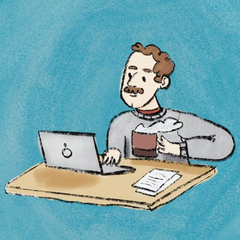

Malcolm Rosenthal
Frontiers of Science Fellow
E3B Lecturer
Columbia University
I’m a behavioral ecologist who studies why (and how) animals talk to each other. I am an arachnologist, which means the conversations that interest me are spider mating songs. I do my field research in New York City parks.
I also teach, which makes me very happy (you’d have to ask the students how they feel about it).
I am 3.50542 × 105 hours old, slightly less than 5 feet 8 inches tall and I’ve never eaten at a Taco Bell.
